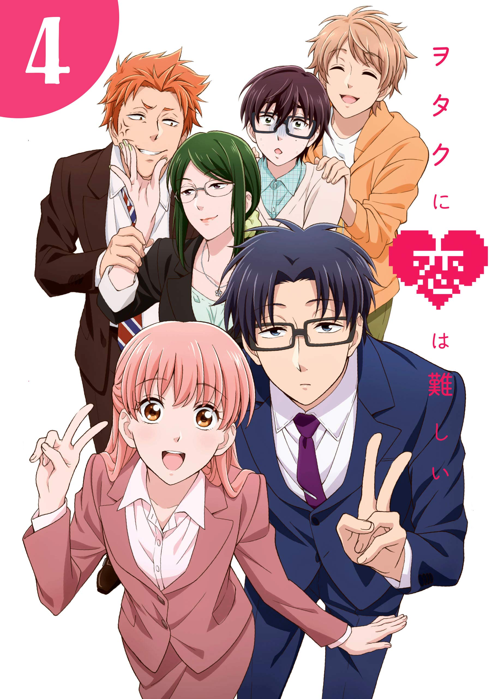
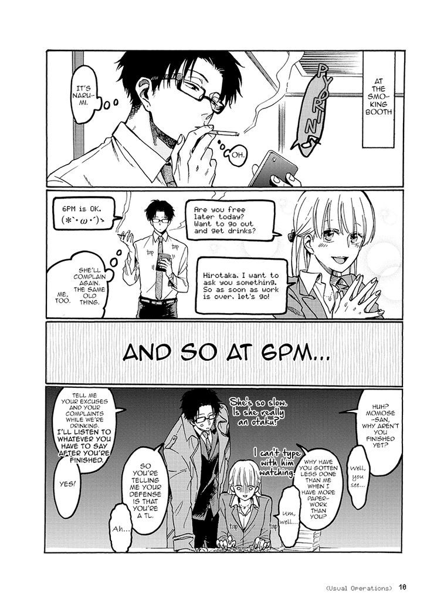

Wotaku ni Koi wa Muzukashii
by Fujita
Synopsis
Narumi Momose, a passionate fujoshi, reunites with her childhood friend Hirotaka Nifuji, a handsome but socially awkward gaming otaku. After discovering their shared interests, they begin dating, navigating the awkward, funny, and heartwarming challenges of love while balancing their jobs, hobbies, and otaku lifestyles.
Chapter 1: Love Begins at the Office

Narumi Momose starts a new chapter in her working life, hoping to keep her otaku hobbies a secret from her coworkers. However, she unexpectedly reunites with Hirotaka Nifuji, her childhood friend who shares her love for games and anime.
After a conversation about their hobbies and the difficulties of dating as otaku, Hirotaka casually suggests that they should date each other. Narumi agrees to give their relationship a chance, beginning a romantic journey filled with gaming, teasing, and the everyday struggles of love.
— End of chapter —